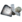
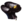
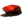

Forteca KUVA
- Wpis w Kodeksie - Forteca Kuva to miejsce na mapie gwiezdnej wprowadzone w aktualizacji 19. Forteca Kuva, jako siedziba IconGrineerB.png Grineer i ich królowych, jest imponującą bazą asteroid wypełnioną potężną bronią i wyrafinowanymi systemami obronnymi zaprojektowanymi, aby powstrzymać nawet najtwardszych wrogów. Baza jest bezustannie w ruchu dzięki silnikom Fomorian, co utrudnia zlokalizowanie i wyśledzenie.
- Surowce które występują na planecie:
-  Złon
 Obwody
Obwody-  Czujniki Neuronowe
 Ampułka Detonitu
Ampułka Detonitu-  Tellur
- Występujący boss: Brak
Fakcje i typy wrogów
 Grineer
Grineer- Bailiff
- Balista Kuva
- Kanonier Kuva
- Rzeźnik Kuva
- Dargyn Kuva
- Pan Drahków Kuva
- Elitarny Szturmowiec Kuva
- Obdzieracz Kuva
- Ognisty Miecznik Kuva
- Ciężkozbrojna Kuva
- Hellion Kuva
- Pani Hyekków Kuva
- Szturmowiec Kuva
- Podpalacz Kuva
- Pięściarz Kuva
- Siekacz Kuva
- Spopielacz Kuva
- Skorpion Kuva
- Poszukiwacz Kuva
- Tarczownik Kuva
- Żołnierz Kuva